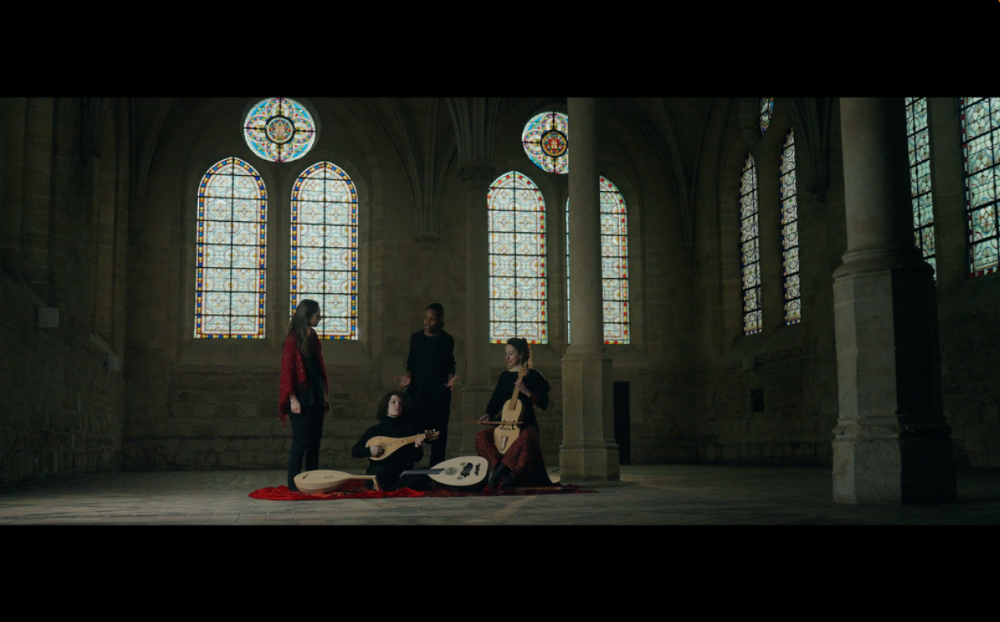
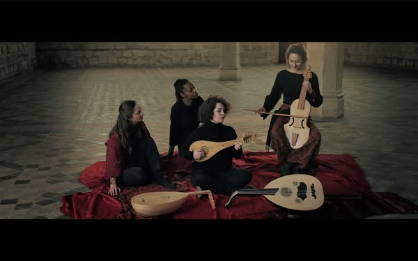
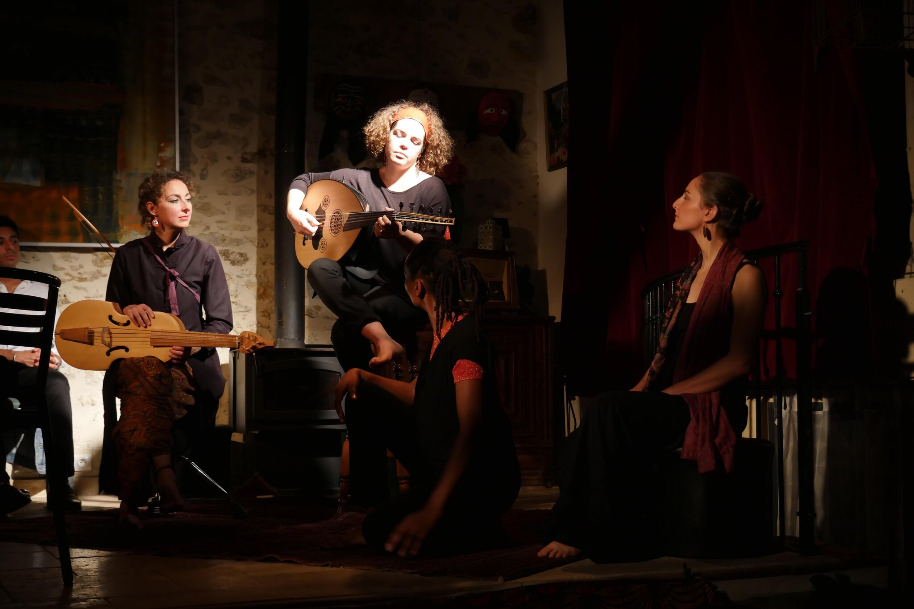
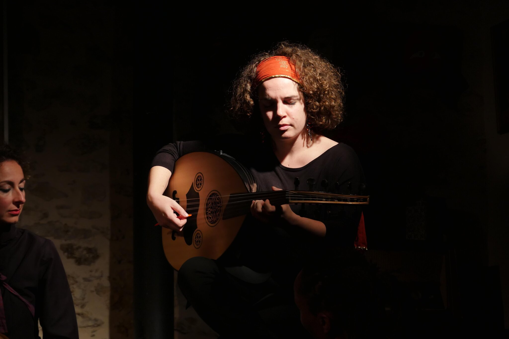
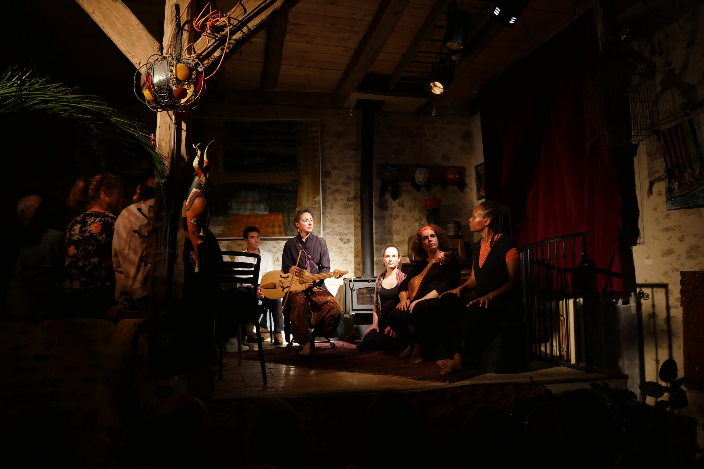
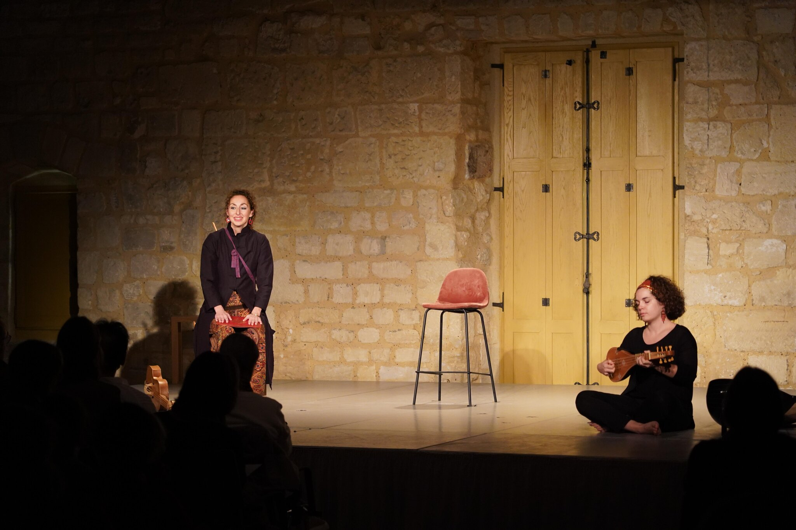
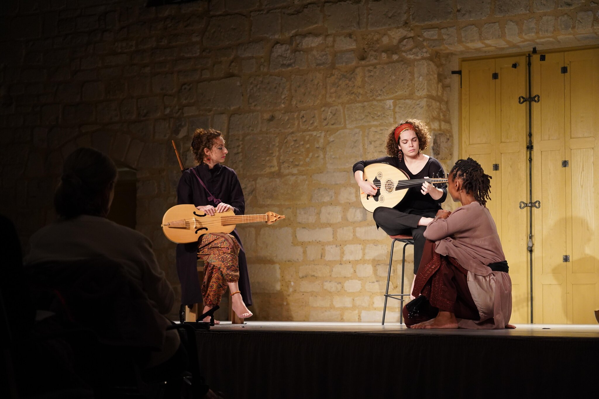

Ensemble Oineroï
Trois Anneaux — et autres récits décaméronesques est un spectacle musical inspiré du Décaméron de Boccace (1313–1375). Florence, 1348 : tandis que la peste ravage l'Europe, un groupe de jeunes décide de se réfugier à la campagne pour survivre à travers les récits et les chants. Le Décaméron, écrin de la sensibilité raffinée du XIVe siècle, guide le public dans un monde où les cultures d'Orient et d'Occident dialoguent et se font écho.
La musique du spectacle se fonde sur des répertoires lointains dans l'espace et dans le temps : des manuscrits médiévaux ayant survécu aux vicissitudes de l'histoire, des mélodies anciennes transmises oralement, des improvisations instrumentales (taksimat) suivant les modes (maqâm) du Proche-Orient et du Maghreb, et des compositions originales. Les sources privilégiées sont celles liées aux lieux mentionnés dans les nouvelles : le manuscrit Reina, le codex Squarcialupi, le manuscrit de Londres, les Cantigas espagnoles. Les instruments sur scène sont eux aussi des voyageurs : le oud, prince des instruments selon les cultures nord-africaines et moyen-orientales ; le chitarrino, son cousin médiéval occidental ; la vièle, compagne des poètes et chanteurs d'amour dans toute l'Europe médiévale ; les flûtes, liées à la danse et au banquet depuis les temps les plus anciens.
Trois histoires se racontent à travers les instruments et les voix : la vièle à archet, la flûte, le oud, le chitarrino et le chant s'alternent et s'entremêlent à la narration dans un programme incluant des musiques de Thibaut de Champagne, Lorenzo da Firenze, Francesco Landini, Guillaume de Machaut, des pièces anonymes des XIIe–XIVe siècles et des compositions originales de Sara Maria Fantini. Sur scène : Sara Maria Fantini (oud, chitarrino), Maud Haering (soprano), Valentine Lorentz (vièle à archet, flûte) et une conteuse (Sylvie Mombo/Julia Alimasi). Le spectacle, produit par l'Ensemble Oineroï en coproduction avec la Fondation Royaumont et la DRAC Île-de-France, est disponible en version scolaire (1h) et en version complète (1h20).
Galerie photos







